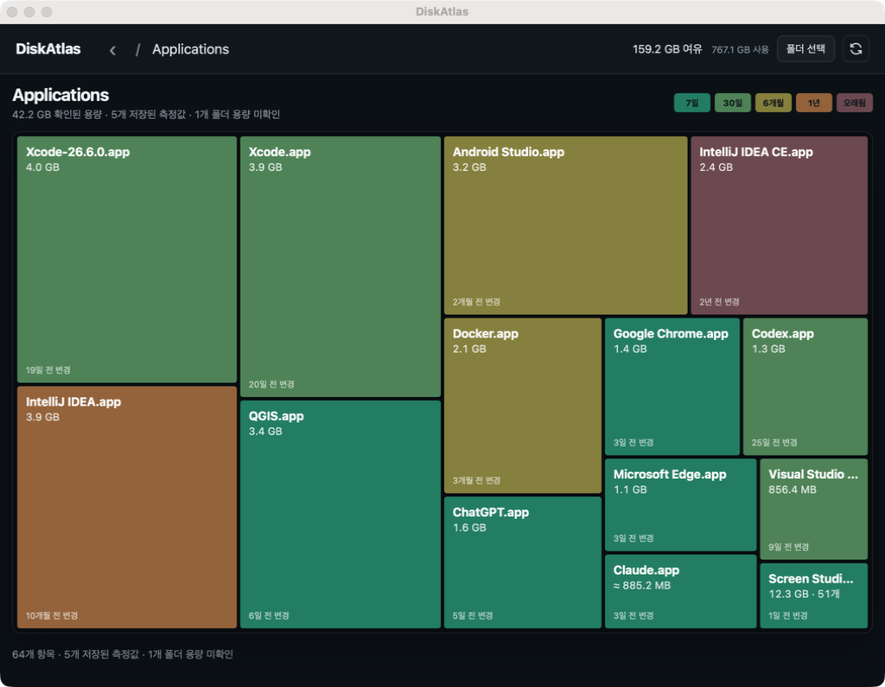

Find the space
See which folders and files use the most room, then narrow the view to the area you want to understand.
Explore storage as a map. Find what's taking space, understand why it matters, and decide what to do next.
Desktop builds for macOS and Windows

DiskAtlas turns folders and files into a map you can explore. Large areas stand out; their contents are one click away.
See which folders and files use the most room, then narrow the view to the area you want to understand.
Read why a candidate was identified, whether it is rebuildable, and what to review before cleanup.
Inspect an item's location and confirm cleanup yourself. DiskAtlas keeps protected paths out of reach.
DiskAtlas labels candidates by risk and explains what it found. Personal files are not treated as disposable just because they are large or old.
Get the desktop app from GitHub Releases or install the macOS build with Homebrew.
Install the universal app with Homebrew, or download the disk image directly.
brew tap sangwonl/tap
brew install --cask diskatlasHomebrew will be available after the first release.
Get the macOS appDownload DiskAtlas-amd64-installer.exe from GitHub Releases. It installs for your Windows user account.
If an unsigned build triggers SmartScreen, confirm the installer came from this project, then choose More info → Run anyway to continue.
Get the Windows installer